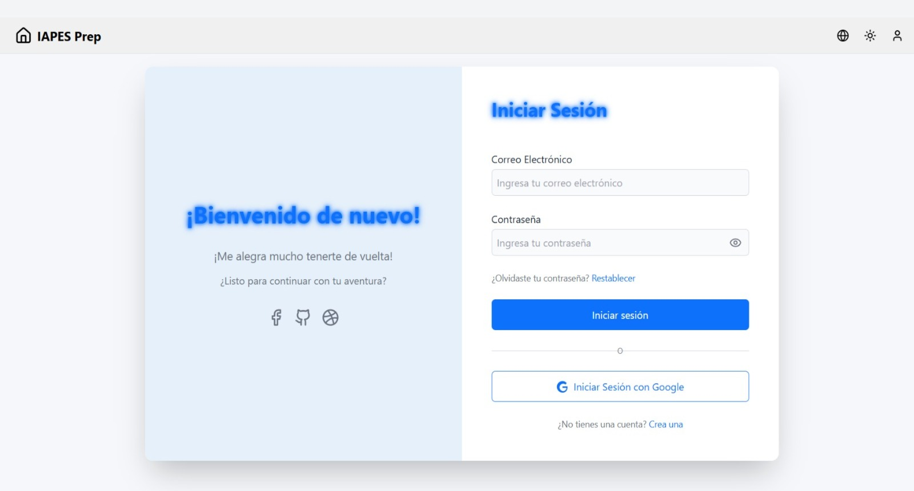
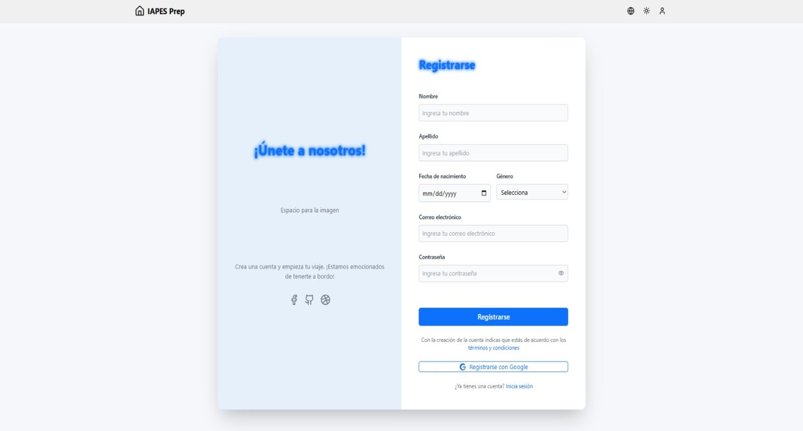

IAPES
Desafía tus conocimientos. Descubre, aprende, triunfa.
Un proyecto innovador que nace con el propósito de aportar a la comunidad estudiantil a través de un software desarrollado por y para los estudiantes que permita poner a prueba sus conocimientos y brindarles las bases precisas para la preparación estratégica hacia las Pruebas Saber 11.

Grupo Objetivo
Estudiantes de grado 11
IA Personalizada
Integración futura de inteligencia artificial
Preparación Saber 11
Métodos personalizados
Problemática y Justificación
Planteamiento del Problema
Ante la brecha educativa que enfrentan los estudiantes de secundaria en Colombia, especialmente en zonas rurales, se requiere implementar soluciones que promuevan un aprendizaje personalizado y autónomo.
Muchos estudiantes de bachillerato enfrentan dificultades para desarrollar sus habilidades académicas debido a la falta de acceso a recursos adecuados y a métodos de estudio que no se adaptan a sus necesidades individuales.
Necesidades Identificadas
Objetivos del Proyecto
Objetivo General
Desarrollar un programa para el proceso de aprendizaje autónomo de los estudiantes a través de la inteligencia artificial para pruebas tipo Saber 11.
Objetivos Específicos
Desarrollo de IA Personalizada
Desarrollar una inteligencia artificial que influya en el proceso de aprendizaje del estudiante en pruebas tipo Saber 11, personalizando su proceso y mejorando su rendimiento.
Metodologías Adaptadas
Diseñar metodologías eficaces adaptadas a las necesidades de cada estudiante para fortalecer habilidades de comprensión, interpretación y argumentación.
Importancia
Inteligencia Artificial en la Educación
Según Alvaro Rojas (2015), "la Inteligencia Artificial (IA) se convierte en un área relevante en la ciencia cognitiva como estudio interdisciplinario de cómo la información es representada y transformada en la mente/cerebro y cómo se puede imitar en un sistema artificial".
Beneficios de la IA en Educación:
- Personalización del aprendizaje
- Análisis de datos en tiempo real
- Retroalimentación individualizada
Aprendizaje Autónomo
En la visión de Roberth Young (2006), "La autonomía es una especie de dirección propia que impone una forma a los principios de pensamiento y acción que guían la vida [...] el agente autónomo se distancia de las influencias y las convenciones sociales".
Características a potenciar:
- Gestión del propio proceso educativo
- Autoevaluación
- Disciplina
Pruebas Saber 11
Las Pruebas Saber 11 son exámenes estandarizados aplicados a estudiantes de undécimo grado en Colombia para evaluar competencias en matemáticas, lectura crítica, ciencias naturales, ciencias sociales e inglés.
Importancia:
- Ingreso a universidades
- Acceso a becas
- Evaluación de calidad educativa
Planteamiento Técnico
Descripción del Proyecto
Plataforma web desarrollada por y para los estudiantes que permite poner a prueba sus conocimientos y brindarles las bases precisas para la preparación estratégica hacia las pruebas Saber 11, con ayuda de herramientas e inteligencia artificial para personalizar su proceso y potenciar sus habilidades.
Funcionalidades Clave:
Métodos de aprendizaje dinámicos
Ejercicios prácticos
Futura Retroalimentación con IA
Seguimiento del progreso
Acerca de la Página
Acceso y Registro de Usuarios
La plataforma ofrece un sistema de autenticación completo para una experiencia personalizada.
Ingreso al Sistema
- Inicio de sesión con correo y contraseña.
- Enlace para crear una nueva cuenta.
Registro de Nuevos Usuarios
- Formulario de registro con datos básicos.
- Enlace para iniciar sesión si ya se tiene una cuenta.
Ingreso
Registro
Contenido de Estudio
La plataforma organiza el contenido en las areas evaluadas en la prueba Saber 11. Cada materia se desglosa en apartados temáticos para facilitar un aprendizaje enfocado y efectivo.
Apartados por Materia
Cada apartado temático está estructurado para ofrecer una experiencia de aprendizaje completa, incluyendo:
- Información General: Una descripción detallada de los conceptos clave del tema.
- Pruebas de Práctica: Ejercicios diseñados para evaluar y reforzar los conocimientos adquiridos.
- Información Especifica: Un boton que redirige hacia información adicional sobre el tema.
- Recomendaciones Se da un atajo con informacion del ultimo tema, tema recomendado y uno a repasar
Seguimiento de Progreso
El sistema proporciona una visualización clara del rendimiento del estudiante para enfocar el estudio de manera efectiva.
Resultados de Prácticas
Los resultados se clasifican para una fácil interpretación:
- Te va bien
- Debes mejorar
Una gráfica de resultados acompaña los datos para una mejor visualización del progreso.
Fases del proyecto
Impacto Esperado
Personalización del aprendizaje adaptada a cada estudiante
Acceso gratuito para estudiantes de bajos recursos
Desarrollo de habilidades de autogestión del aprendizaje
Mejor preparación para ingreso universitario
Proyección Futura
Fase Beta
Investigación exhaustiva con estudiantes del grado 11 del INEM de Medellín para alimentar la base de datos de la IA y validar la efectividad del sistema.
Integración de IA Completa
Implementación de algoritmos de aprendizaje automático para análisis predictivo del desempeño estudiantil y recomendaciones personalizadas avanzadas.
Equipo de Desarrollo
Desarrolladores:
- Sara Nicolle Leguizamon Moreno
- Sophia Narvaez Henao
- Daniel Andres Oliveros Olmos
- Ian Matias Riaño Valle
Docentes Tutores:
- Alexander de Jesús Narváez Berrio
- Vladimir Montaño
Institución y ente articulado:
INEM Jose Felix de Restrepo, Medellín - Colombia
SENA